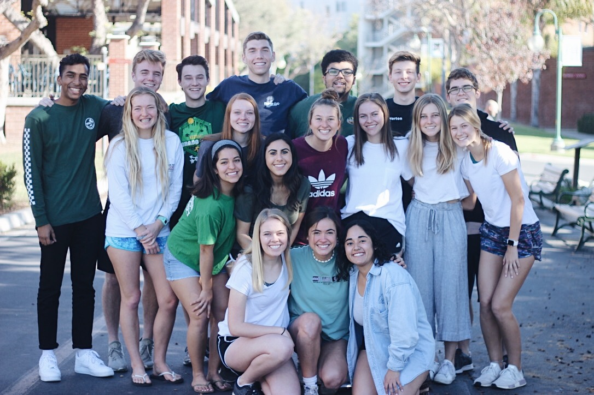
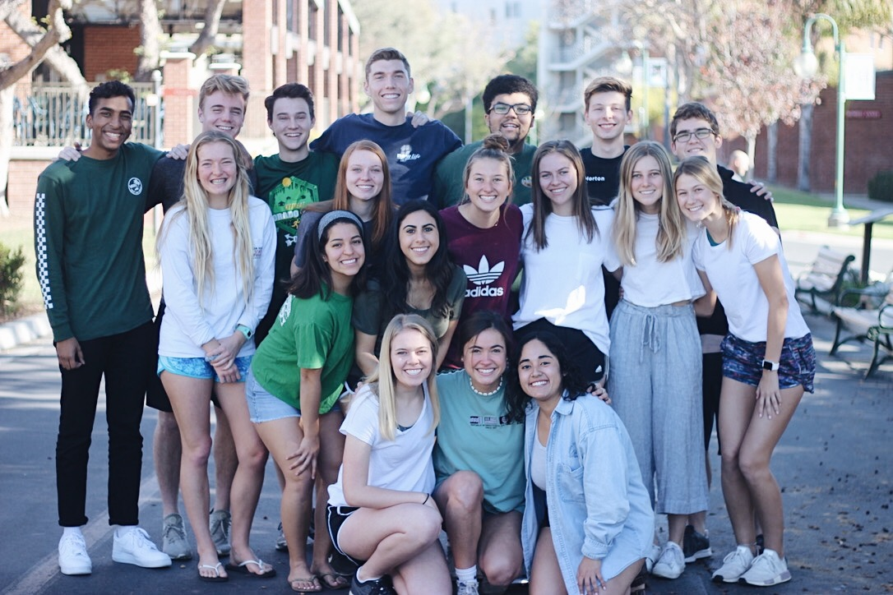

EDUCATION
Bachelor of Science in Computer Science
Minors in Business Administration and Biblical and Theological Studies
Biola University, La Mirada, CA (Expected 2021)
Cumulative GPA: 3.92
Relevant Coursework: Intro to Computer Science, Data Structures, Discrete Structures, User Interface Design
and Programming, Computer Organization and Assembly Language Programming, Operating Systems, Computer Communications, Operations
Research, Linear Algebra, Calculus III
AWARDS AND RECOGNITION
Haque Computer Science Scholarship (2019-2020)
Biola University's Academic Recognition Deans List (Fall 2017 - Fall 2019)
President's Scholarship Nominee (2019-2020)
WORK EXPERIENCE
Digital Media Academy Instructor and Education Assistant
July 2018 and July 2019
University of Chicago/Duke University
- Taught an introductory course on artificial intelligence to campers using Python programming and DialogFlow by Google
and in an introductory game design course
- Assisted the camp director to organize logistical information to ensure camp success
- Lead extracurricular activities outside of the classroom to encourage activity and exercise and further engage the
students
Computer Science Teachers Assistant
September 2019-Present
Biola University, La Mirada, CA
- Chosen by professors in department in order to reinforced students in understanding C++ programming and other course
material for success in the classroom
- Held 4 hours per week of TA sessions to directly assist students with projects, answer questions and look over code
- Worked with professor to grade student’s programming assignments, ensuring timely and descriptive grades
Residence Advisor
August 2018-May 2019
Biola University, La Mirada, CA
- Mediated conflict between residents to bring about compromise and understanding/harmony while remaining attentive
to individual concerns
- Utilized finances of $500 for 6 events throughout the year for the betterment of residence and floor community
- Developed 6 enriching events to engage 400 hall residents in conversation, diversity, academic performance and personal
awareness (relevant social and cultural experiences)
Missions Conference Program and Scheduling Volunteer
November 2019-March 2020
Biola University, La Mirada, CA
- Worked alongside a team of 18 individuals to organize events for Biola’s Missions Conference relating to the attending
missionary organizations
- Facilitated conversation with over 60 organizations that would be attending the conference to coordinate expenses,
housing and food services and inform them of day to day activities
- Responded to emails regarding questions and information about conference, and organized spreadsheets of information about
the different organizations and the individuals representing them
Dunkin Donuts Shift Lead
May 2016-August 2017
Dunkin Donuts, Howard, WI
- Served customer’s needs by making and providing their proper orders, assisting them at the cash register, and answering q
uestions
- Awarded Employee of the Month for creating a productive and positive work environment for coworkers to work efficiently,
serve well, and encourage others
- Promoted to shift leader after first year, trained new employees and counted sales for the shift
SKILLS
Coding Languages: Proficient in C++, knowledgeable in Python, Java, html, CSS, and javascript,
familiar with AMPL and R
Programming Software: Visual Studio, Python IDLE Shell, Android Studio, Atom, RStudio

 
